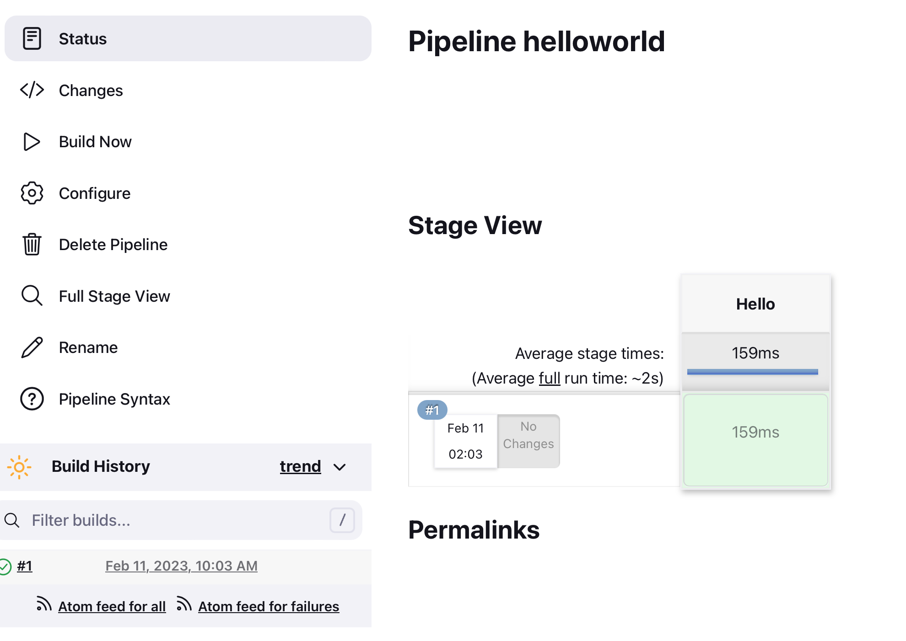

4. Plugins at Work
Most of what you see in Jenkins comes from plugins. Find each one in the build you just ran. Tick each box when you have found it.
☐ Timestamper: the time on each line
Open Console Output. Each line starts with a time, like 18:42:07. This comes from timestamps() in options. Use it to find which step is slow.
☐ JUnit: the test report
- Go to the page of build #1. Click Tests (or Test Result, depending on your version).
- You see 0 failures and 4 tests. Click CalculatorTest to see the 4 tests by name.
- Go back to the job page: after two builds, a Test Result Trend chart appears.
☐ The raw test report (XML)
The JUnit page is built from a simple text file written by the tests: TEST-CalculatorTest.xml. To open it, on the page of build #1, under Build Artifacts, click TEST-CalculatorTest.xml, then view. You see one <testcase> line per test; a failed test contains a <failure> line. This is the standard format used by JUnit, pytest, Maven and almost every test tool: that is why Jenkins can show the results of any language.
☐ Artifacts: download the result
- On the page of build #1, under Build Artifacts, click
calculator.jarto download it. - Optional: run it on your computer in a terminal:
java -jar calculator.jar. It prints2 + 3 = 5. This is the file you would deploy.
☐ Workspace Cleanup: nothing left behind
On the job page, click Workspace: it is empty, or shows "No workspace". cleanWs() deleted the files after the build, so the next build starts clean.
☐ Stage View and Stages: the pipeline as a picture
Click Build with Parameters › Build once more. On the job page, the Stage View table shows one column per stage, including Declarative: Checkout SCM (Jenkins downloading the repository) and Declarative: Post Actions (the post block).
